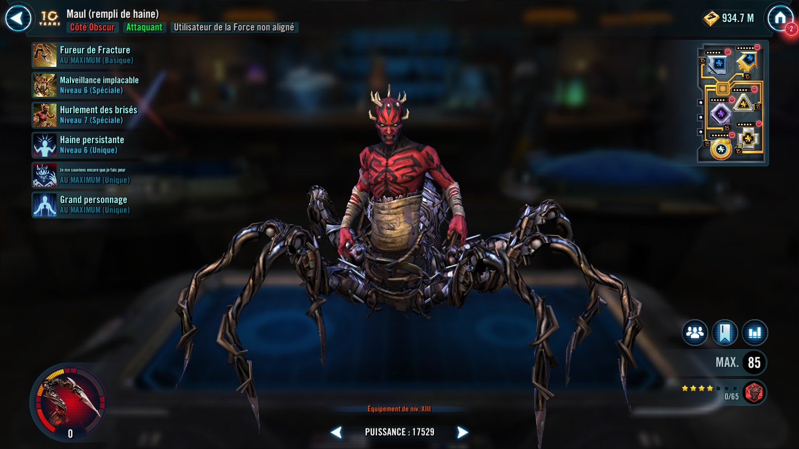
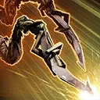
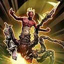
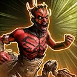

Maul (Hate-Fueled)
An unhinged Attacker driven by hatred and held together by rage and scrap metal
An unhinged Attacker driven by hatred and held together by rage and scrap metal


Deal Physical damage to target enemy and inflict a stack of Bleed (max 6), which can't be dispelled or resisted, until the end of encounter.
Gain a stack of Edge of Madness (max 100 stacks) until the end of the encounter, which can't be copied, dispelled, or prevented.
Once per encounter, during his turn, Maul inflicts Fracture on target enemy until each of his allies has taken a turn or until he is defeated, which can't be copied, dispelled, evaded, or resisted.

Deal Physical damage to target enemy four times and inflict a stack of Bleed (max 6), which can't be dispelled or resisted, until the end of encounter. If the target already has max stacks of Bleed, trigger their damage.
If Maul has 30 or more stacks of Edge of Madness, reduce the cooldown of Howl of the Broken by 1.
If Maul has 60 or more stacks of Edge of Madness, he deals an additional instance of True damage to target enemy equal to 30% of his Max Health.
Omicron Boost : While in Territory Wars: Deal Physical damage an additional four times.
Inflict an additional 5 stacks of Bleed (max 6), which can't be dispelled or resisted, until the end of encounter.
If he has 30 or more stacks of Edge of Madness, reset the cooldown of Howl of the Broken instead.

Deal Physical damage, Daze, and inflict Healing Immunity for 2 turns on all enemies.
Call all Dark Side Attacker allies to assist.
Maul gains Critical Damage Up and Offense Up for 2 turns. If he has 50 or more stacks of Edge of Madness, inflict Fear on all enemies for 1 turn, which can't be copied, dispelled, or resisted.
Remove 60% Turn Meter from all enemies and all Dark Side Attacker allies gain 60% Turn Meter.
Omicron Boost : While in Territory Wars: If target enemy is inflicted with Bleed, inflict a stack of Bleed (max 6), which can't be dispelled or resisted, on all enemies until the end of encounter.
Increase the cooldowns of target enemy by 1, which can't be resisted.
Whenever Maul takes damage, he gains 3 stacks of Edge of Madness (max 100) until the end of the encounter, which can't be copied, dispelled, or prevented, and he has a 5% chance to gain 75% Turn Meter.
Maul can't be instantly defeated.
While Maul is at certain Health thresholds, he gains cumulative effects:
- Web of Descent I (75% Health or less): +50% Offense; can't recover Health above 75%
- Web of Descent II (50% Health or less): +25 Speed; when he takes damage, he instead has a 10% chance to gain 75% Turn Meter; can't recover Health above 50%
- Web of Descent III (25% Health or less): +2,200% Defense and 100% Offense; when Maul hits this threshold, he gains bonus Protection (100%) for 2 turns and takes a bonus turn; can't recover Health above 25%
Omicron Boost : While in Territory Wars: At the start of battle, Maul gains 30% Max Health and Offense, and 100 stacks of Edge of Madness (max 100) until the end of the encounter, which can't be copied, dispelled, or prevented.
Whenever Maul is damaged, he instead has a 25% chance to gain 100% Turn Meter.
At the start of battle, Maul gains 25% Max Health for each other Dark Side ally and 25% Offense for each other non-Dark Side ally, Hatred and 5 stacks of Anguish until the end of battle, which can't be copied, dispelled, or prevented. He loses all Protection and gains that much Max Health, and he takes reduced damage from percent Health damage effects. If there is an enemy Kenobi, Maul gains 20 stacks of Edge of Madness (stacking, max 100) until the end of the encounter.
During Maul's first turn each encounter, he ignores taunt effects.
Maul's attacks can't be evaded or countered and he is immune to Ability Block, Fear, and Redeemed.
If there were no allied Galactic Legends at the start of battle, until the first time Maul is defeated: Enemies defeated by Dark Side allies can't be revived. If there is at least one other active ally, at the start of each character's turn, Mark the healthiest Unaligned Force User ally, which can't be dispelled or resisted, and they gain bonus Protection (30%) until the end of that turn.
This character can't be used in the ally slot or with another large character and summons are prevented for allies.